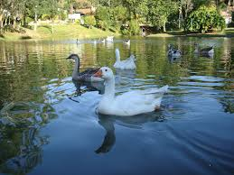

O que eu mais gosto em Joinville
Passear em Joinville

Joinville é um município localizado na região norte do estado de Santa Catarina. Com mais de 500 mil habitantes é a maior cidade do estado.
E existem muitos outros lugares interessantes na cidade...
- Mercado Municipal
- O estádio da Arena Joinville.
- Parque Zoobotânico
- Parque France
- Parque da Expoville
- Iate Clube
- Opa Bier
- E mais!
Lazer em Joinville

O Mirante de Joinville, situado no alto do Morro da Boa Vista, é o principal ponto turístico da cidade, oferecendo uma vista panorâmica de 360º a 250 metros de altitude.
Parque France
